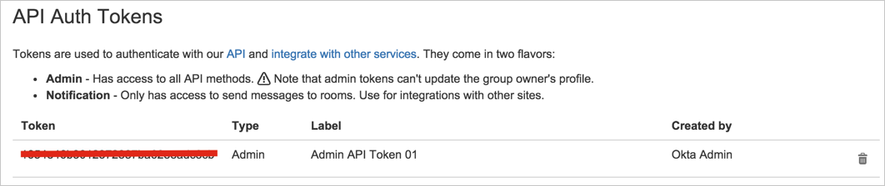
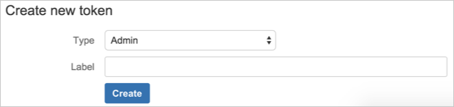
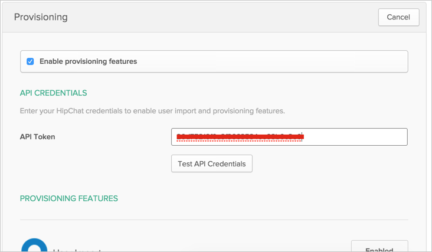
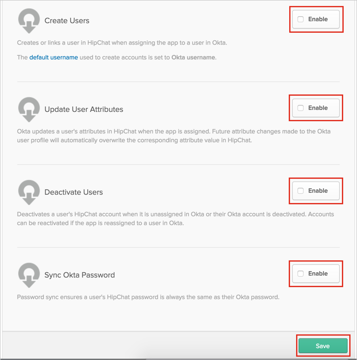
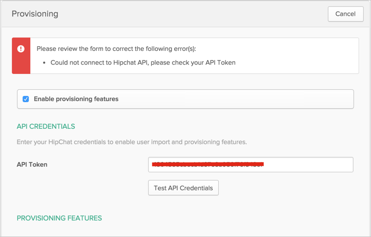
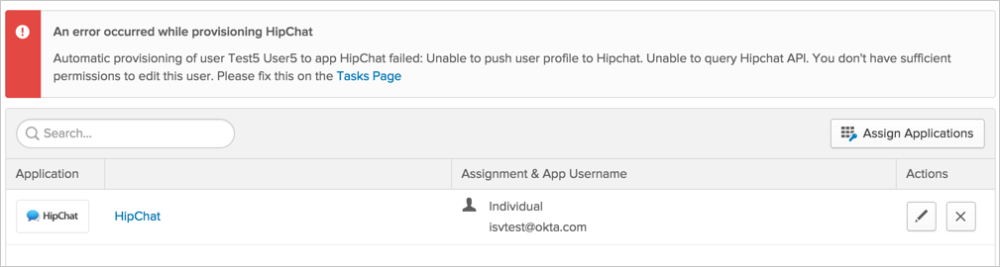

This guide provides the steps required to configure Provisioning for HipChat.
The following provisioning features are supported:
Note: HipChat API V2 token will not work.
Go to https://hipchat.com/admin/api and login as an Admin user or as Group Owner.
Either:
Use an exiting token:

Create a new one:

Configure your Provisioning settings for HipChat as follows:
Check the Enable provisioning features box.
In the API Credentials section, enter the token you just obtained into the API Tokenfield:

Scroll down the Provisioning page and select those provisioning features you want to enable:

Click Save.
You can now assign people to the app (if needed) and finish the application setup.
You will receive the following error when you have an invalid API token:

You will receive the following error when you try to push profile update for Group Owner User:
